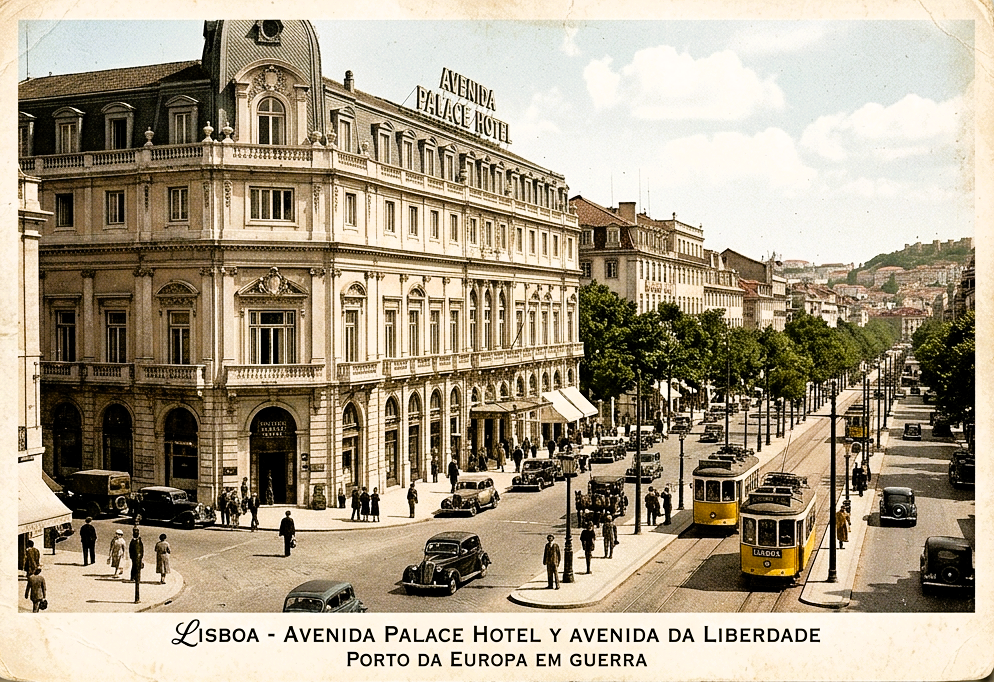

Лиссабон, 2 марта 1943 года, 13:40. (Rua 1º de Dezembro 123)
Отель Avenida Palace. Высокие потолки, мраморные полы, запах страха и дорогого парфюма.[...]
Заказ на устранение офицера связи Абвера пришёл от офицера Гестапо. Неожиданно и срочно.

СОВЕРШЕННО СЕКРЕТНО
ПЕРЕХВАТ № 08/А
14 ДЕКАБРЯ 1946
...